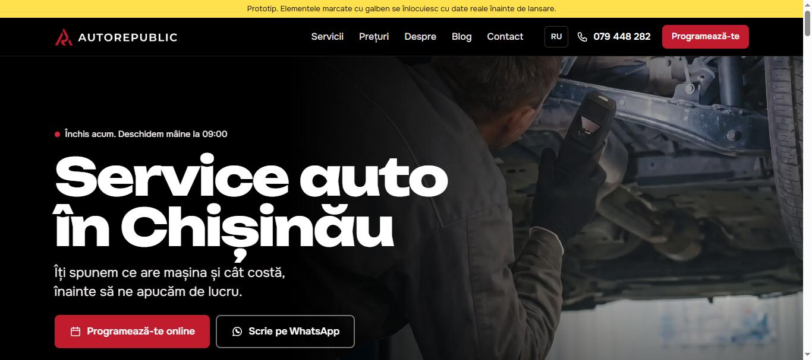
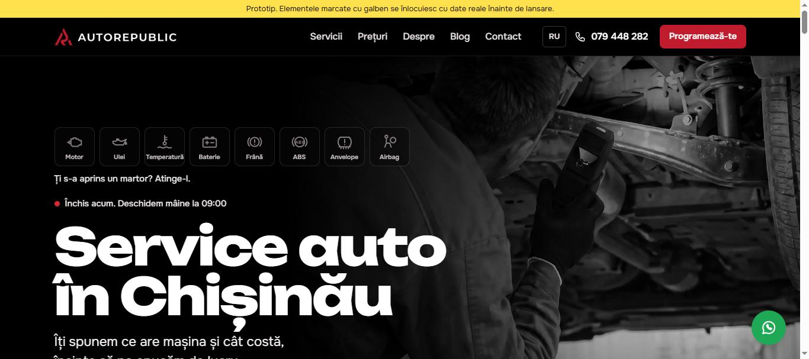

Site nou AutoRepublic
Două prototipuri pentru discuția cu directorul. Au aceleași pagini, aceleași texte și același SEO. Diferă designul și instrumentele care aduc programări.

Versiunea 1Clasică, poze color
- Programare online în 3 pași
- Alegerea după simptom: ce simți la mașină
- Bară de contact rapid pe telefon: Sună, WhatsApp, Viber

Versiunea 2Bordul mașinii
- 8 martori de bord în primul ecran: atingi unul și afli ce înseamnă
- Poze alb-negru cu roșul păstrat, ca pe colantul mașinii
- „Sună-mă înapoi în 15 minute”, programare cu turometru, vremea din Chișinău
De știut când le arăți
- Sunt prototipuri. Textele marcate cu galben se completează cu date reale: prețuri, recenzii, echipă, garanție.
- Formularele de programare și „Sună-mă înapoi” nu trimit încă cererile. Legătura cu CRM-ul se face la lansare.
- Butoanele Sună, WhatsApp și Viber deschid aplicațiile de pe telefon cu numărul real al atelierului.
- Pe telefon, folosește meniul și bara de jos, la fel ca un client.